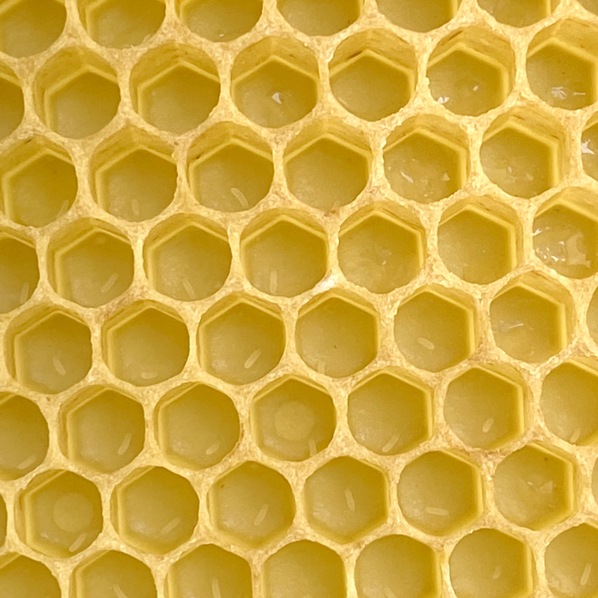
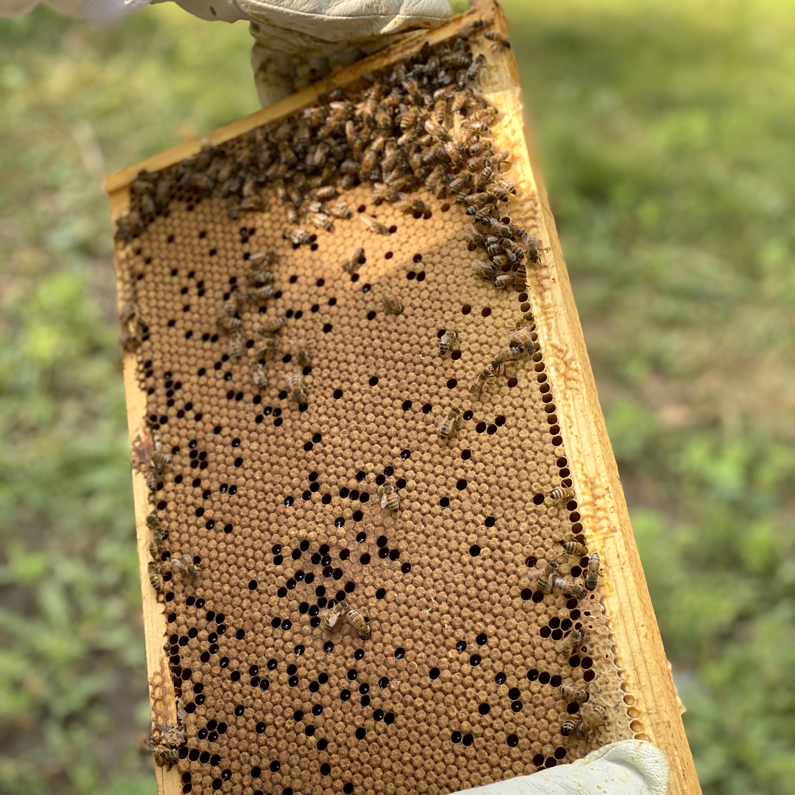
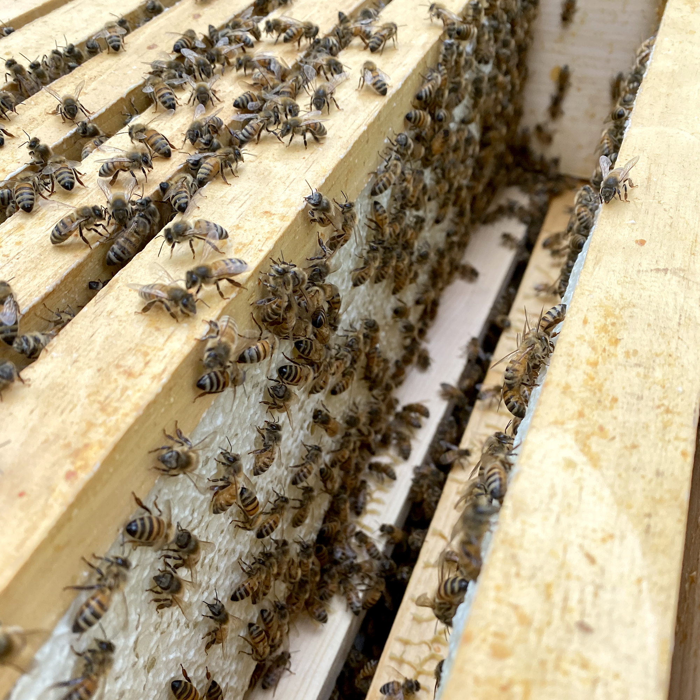
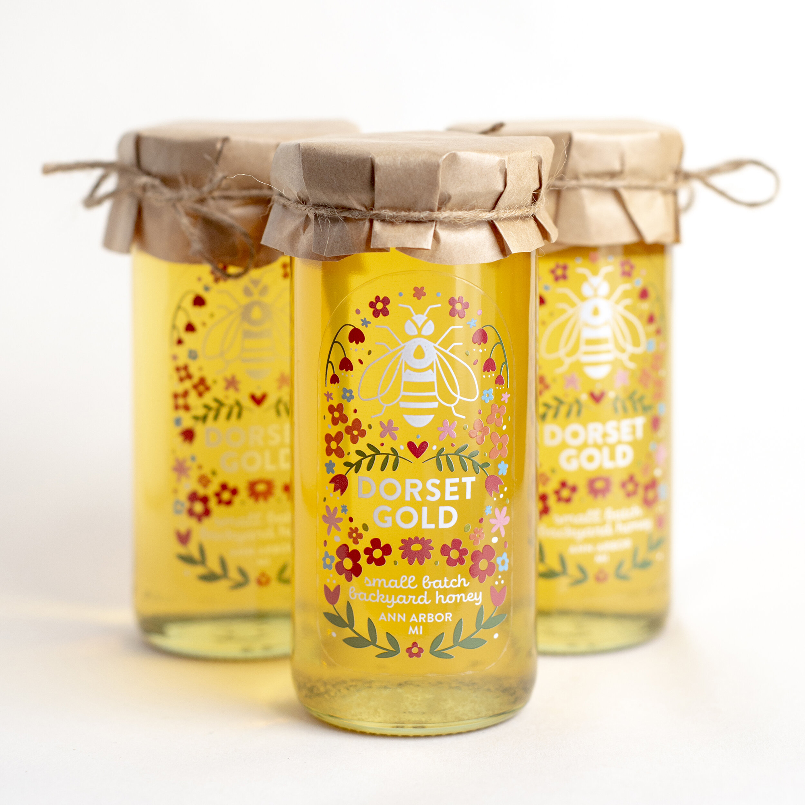

Beekeeping
 Beekeeping is a team sport and it's always good to bring a friend (or family member)!
Beekeeping is a team sport and it's always good to bring a friend (or family member)!

The queen bee lays her eggs, which look like small grains of rice, in the wax comb. She can lay up to 1,500 eggs a day.

Baby bees are also called 'brood.' This full frame of brood is also the sign of a healthy queen!

An inside look into the 'super,' where the colony stores their honey. Smaller frames are easier to harvest.

These are a few jars of fresh honey from my hives, packaged and ready for delivery.